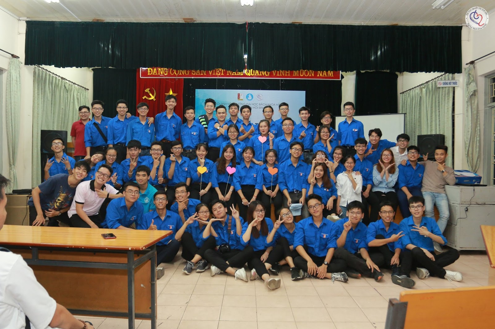

Hoạt động ngoại khóa
- Công tác tuyên truyền, giáo dục chính trị, tư tưởng cho Sinh viên: phối hợp tổ chức chương trình Chào tân sinh viên, giúp các bạn hiểu thêm về các hoạt động phong trào - văn nghệ thể thao của trường.
- Các hoạt động hỗ trợ nghiên cứu khoa học - hỗ trợ học tập: đồng hành, hỗ trợ sinh viên trong học tập và nghiên cứu khoa học; phối hợp cùng phòng Quản lý Nghiên cứu Khoa học tổ chức “Ngày Hội sáng tạo trẻ hàng năm” thu hút đông đảo sinh viên.
- Công tác Tổ chức - Đoàn vụ: Đoàn Thanh niên và Hội Sinh viên tổ chức chương trình tuyển nhân sự cho các ban chuyên môn vào đầu mỗi năm học và được rất nhiều sinh viên quan tâm tham gia, đặc biệt là sinh viên năm nhất.
- Văn nghệ, thể thao: Tổ chức nhiều giải đấu, cuộc thi cho sinh viên: “Giải bóng đá khổi sinh viên năm nhất”, “Giải bóng đá nữ BKFS”, “Giải tennis đồng đội Bách Khoa”, “Tiếng hát sinh viên Bách Khoa”, “Mr&Miss” với mục đích tìm ra những gương mặt nam thanh nữ tú đại diện cho vẻ đẹp thanh lịch, tài năng của sinh viên Bách Khoa.
- Công tác xung kích, tình nguyện: Một số công tác tình nguyện trong năm học như “Bách Khoa nghìn giọt hy vọng”, “Cổng trường an toàn giao thông”, “Tiếp sức mùa thi”, “Ngày chủ nhật xanh”, ... Đoàn Thanh niên trường luôn duy trì và quản lý sinh viên tình nguyện với hơn 1500 sinh viên.
- Công tác tuyên dương, khen thưởng:Hành trình “Tôi tỏa sáng” được tổ chức nhằm xét chọn, tuyên dương các cá nhân, tập thể đạt danh hiệu “Sinh viên 5 tốt” - Đạo đức tốt, Học tập tốt, Thể lực tốt, Hội nhập tốt, Tình nguyện tốt. Đây là một danh hiệu cao quý của sinh viên Việt Nam, là cơ sở cho việc xét học bổng, du học, tuyển dụng,..
 Đội tình nguyện Hội sinh viên ĐH Bách Khoa Hà Nội
Đào tạo kỹ năng
Bên cạnh hoạt động ngoại ngoại khóa Đoàn Hội, trường còn tổ chức đào tạo cho sinh viên về 2 vấn đề quan trọng để phát triển cá nhân: Ngoại ngữ và Kỹ năng mềm.
Câu lạc bộ
Là một trong những trường với số lượng CLB đông đảo, ĐH Bách Khoa luôn là nơi mang đến môi trường tốt nhất cho sinh viên. Dưới đây là một số CLB của trường
CLB Âm nhạc (MIC Club)
Với phương châm “sống hết mình với đam mê”, MIC là điểm đến cho những ai có đam mê cháy bỏng với
âm nhạc; bên cạnh đó clb có các mảng khác như nhảy, beatbox, nhạc cụ,...
Trang facebook: M.I.C Club

CLB Yêu sách
CLB là nơi hội tụ những thành viên có niềm yêu thích với sách, cùng nhau trao đổi kinh nghiệm lựa
chọn, kỹ năng đọc sách.
Trang facebook:
CLB Yêu Sách Bách Khoa Hà Nội
CLB Múa (BeU)
BeU là CLB trực thuộc Ban Văn Nghệ Thể Thao của trường, BeU bên cạnh việc mang đến môi trường
luyện tập cho các thành viên thì là nơi để các thành viên có thời gian được giao lưu, chia sẻ
với nhau.
Trang facebook: BeU - CLB Múa Bách
Khoa
CLB Bóng đá
Điểm đến của những thành viên có niềm đam mê với môn thể thao vua, CLB hứa hẹn đem đến những buổi
luyện tập, giao hữu đầy cảm xúc.
Trang facebook: CLB Bóng Đá ĐH Bách
Khoa Hà Nội
CLB Cờ vua
CLB hướng tới chất lượng cao về chuyên môn, nơi tập hợp những thành viên có chung niềm yêu thích
bộ môn cờ vua trên tinh thần tự nguyện, ngắn kết.
Trang facebook: CLB Cờ Vua Bách Khoa
Hà Nội
CLB Karate-do
Là một CLB võ thuật, bên cạnh việc luyện tập rèn luyện sức khỏe thì các thành viên có cơ hội giao
lưu với nhau tạo môi trường thoải mái, thân thiết trong CLB.
Trang facebook: Karate-do
Bách Khoa
CLB RPCC - Tổ chức Chương trình và Sự kiện
Là CLB trực thuộc Ban Văn nghệ Thể thao của Đoàn Thanh niên của trường, RPCC là nơi giúp bạn rèn
luyện kỹ năng chạy sự kiện, nơi các bạn có thể cùng nhau tổ chức, học hỏi kinh nghiệm thực tế
nhất.
Trang facebook: CLB RPCC - Tổ
Chức Chương Trình Và Sự Kiện Bách Khoa
Ngoài ra, sẽ có những CLB riêng của từng Viện và CLB học thuật được thành lập, sau khi học và trải nghiệm tại trường các bạn sẽ biết rõ hơn và lựa chọn CLB phù hợp nhất với chuyên ngành của mình.
Đăng bởi Area1110
tham khảo thông tin từ
Facebook
.